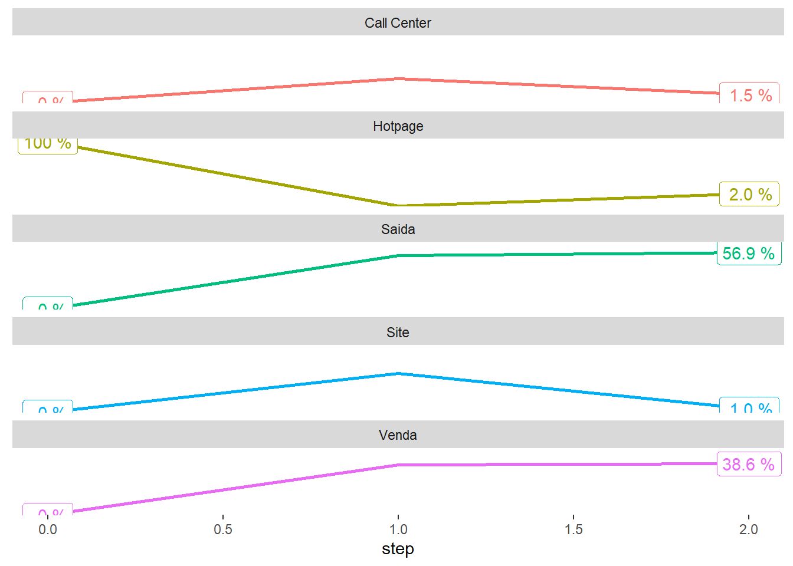
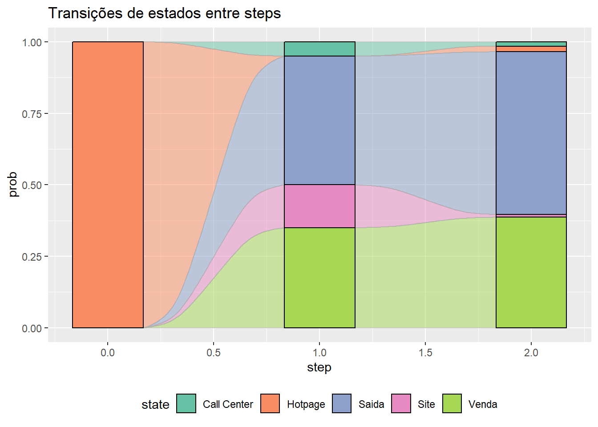
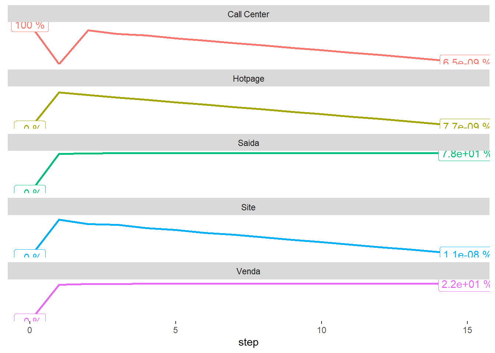
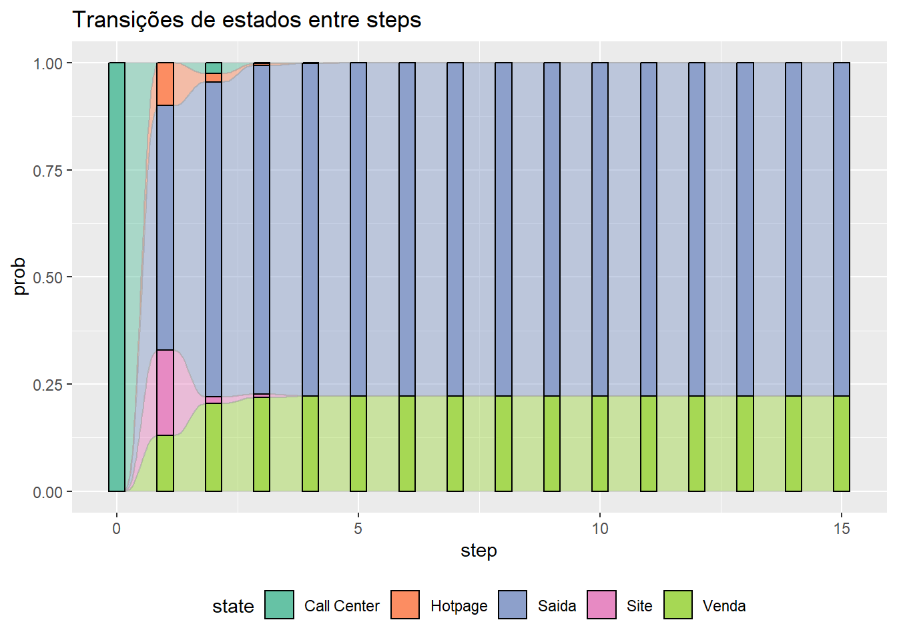

Métodos Matriciais e Análise de Clusters - Atividade Individual - I
- Descrição da Atividade
- Atividades
- a) Com base nela, se existe um cliente que inicia sua interação pela Hotpage, qual a probabilidade de ele estar no Site, na Hotpage, no Call Center, ter resultado em Venda e ter dado Saída no passo seguinte? E no passo logo em seguida?
- b) Use o software para calcular qual a probabilidade de venda final (isto é, na condição de estabilidade) de um cliente que interagiu pela primeira vez com a empresa usando: Coloque aqui apenas o resultado.
- c) De acordo com o resultado de b), qual o melhor “canal de entrada”: Site, Hotpage ou Call Center? Justifique.
- d) Caso 50% dos clientes sejam “originados” por procura orgânica no Site, 20% pela Hotpage e 30% pelo Call Center, qual seria a taxa de conversão assintótica final?
Descrição da Atividade
Tema: Cadeias de Markov.
Em um dado e-commerce, a matriz de transição para uma dada operação é a representada abaixo:
| Site | Hotpage | Call Center | Venda | Saída | |
|---|---|---|---|---|---|
| Site | 0.00 | 0.10 | 0.10 | 0.20 | 0.60 |
| Hotpage | 0.15 | 0.00 | 0.05 | 0.35 | 0.45 |
| Call Center | 0.20 | 0.10 | 0.00 | 0.13 | 0.57 |
| Venda | 0.00 | 0.00 | 0.00 | 1.00 | 0.00 |
| Saída | 0.00 | 0.00 | 0.00 | 0.00 | 1.00 |
Responda as atividades abaixo:
Atividades
a) Com base nela, se existe um cliente que inicia sua interação pela Hotpage, qual a probabilidade de ele estar no Site, na Hotpage, no Call Center, ter resultado em Venda e ter dado Saída no passo seguinte? E no passo logo em seguida?
Primeiramente iniciamos com a criação da matriz de transição fornecida no enunciado do exercício:
tm <- matrix(c(0.00, 0.10, 0.10, 0.20, 0.60,
0.15, 0.00, 0.05, 0.35, 0.45,
0.20, 0.10, 0.00, 0.13, 0.57,
0.00, 0.00, 0.00, 1.00, 0.00,
0.00, 0.00, 0.00, 0.00, 1.00),
nrow = 5,
byrow = TRUE)
tm## [,1] [,2] [,3] [,4] [,5]
## [1,] 0.00 0.1 0.10 0.20 0.60
## [2,] 0.15 0.0 0.05 0.35 0.45
## [3,] 0.20 0.1 0.00 0.13 0.57
## [4,] 0.00 0.0 0.00 1.00 0.00
## [5,] 0.00 0.0 0.00 0.00 1.00Com a matriz de transição criada criamos um objeto MarkovChain usando o package markovchain
library(markovchain)
mkv_chain <- new("markovchain",
transitionMatrix = tm,
states = c("Site", "Hotpage", "Call Center", "Venda", 'Saida'),
name = "MarkovChain para o e-commerce")
mkv_chain## MarkovChain para o e-commerce
## A 5 - dimensional discrete Markov Chain defined by the following states:
## Site, Hotpage, Call Center, Venda, Saida
## The transition matrix (by rows) is defined as follows:
## Site Hotpage Call Center Venda Saida
## Site 0.00 0.1 0.10 0.20 0.60
## Hotpage 0.15 0.0 0.05 0.35 0.45
## Call Center 0.20 0.1 0.00 0.13 0.57
## Venda 0.00 0.0 0.00 1.00 0.00
## Saida 0.00 0.0 0.00 0.00 1.00Podemos desenhar o diagrama de Grafo da matriz de transição.
Para responder as próximas questões vou utilizar uma função customizada a parte do pacote marcokchain e ggplot para recuperar o histórico de transição entre os estados em cada período e desenhar algumas visualizações destes dados.
get_transition_states <- function(initial_state, steps, mkv_chain) {
states <- initial_state
for (step in seq(1, steps, 1)) {
final_state <- initial_state * (mkv_chain ^ step)
states <- rbind(states, final_state)
}
states <- as_tibble(states)
states$step <- as.numeric(row.names(states)) - 1
states <- select(states, step, everything())
output = list()
output$transition_states <- states
states <- gather(states, 'state', 'prob', -step)
output$transition_states_plot_1 <- ggplot(data = states,
aes(x = step,
y = log(prob),
color = state)) +
geom_line(size = 1) +
geom_label(data = filter(states, step == max(step)),
aes(label = paste(format(prob * 100, digits = 2), '%'))) +
geom_label(data = filter(states, step == min(step)),
aes(label = paste(format(prob * 100, digits = 2), '%'))) +
theme(legend.position = 0,
axis.title.y = element_blank(),
axis.ticks.y = element_blank(),
axis.text.y = element_blank(),
panel.background = element_blank()) +
facet_wrap( ~ state, nrow = 7)
output$transition_states_plot_2 <- ggplot(data = states,
aes(y = prob,
x = step,
stratum = state,
alluvium = state,
fill = state)) +
scale_fill_brewer(type = "qual", palette = "Set2") +
geom_flow(stat = "alluvium", lode.guidance = "frontback",
color = "darkgray") +
geom_stratum() +
theme(legend.position = "bottom") +
ggtitle("Transições de estados entre steps")
return(output)
}initial_state <- c(0, 1, 0, 0, 0)
steps <- 2
kable(get_transition_states(initial_state, steps, mkv_chain)['transition_states'])
|
## $transition_states_plot_1
## $transition_states_plot_2
b) Use o software para calcular qual a probabilidade de venda final (isto é, na condição de estabilidade) de um cliente que interagiu pela primeira vez com a empresa usando: Coloque aqui apenas o resultado.
-i. O Site.
initial_state <- c(1, 0, 0, 0, 0)
steps <- 15
kable(get_transition_states(initial_state, steps, mkv_chain)['transition_states'])
|
## $transition_states_plot_1
## $transition_states_plot_2-ii. A Hotpage.
initial_state <- c(0, 1, 0, 0, 0)
steps <- 15
kable(get_transition_states(initial_state, steps, mkv_chain)['transition_states'])
|
## $transition_states_plot_1## $transition_states_plot_2-iii. O Call Center.
initial_state <- c(0, 0, 1, 0, 0)
steps <- 15
kable(get_transition_states(initial_state, steps, mkv_chain)['transition_states'])
|
## $transition_states_plot_1
## $transition_states_plot_2
c) De acordo com o resultado de b), qual o melhor “canal de entrada”: Site, Hotpage ou Call Center? Justifique.
O melhor canal de entrada é a hotpage pois tem a maior taxa de conversão em vendas 40%
d) Caso 50% dos clientes sejam “originados” por procura orgânica no Site, 20% pela Hotpage e 30% pelo Call Center, qual seria a taxa de conversão assintótica final?
initial_state <- c(0.5, 0.2, 0.3, 0, 0)
steps <- 15
kable(get_transition_states(initial_state, steps, mkv_chain)['transition_states'])
|
## $transition_states_plot_1## $transition_states_plot_2